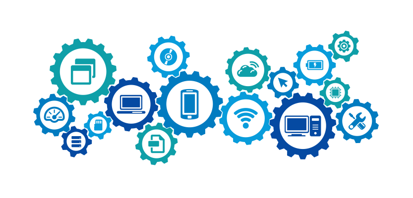
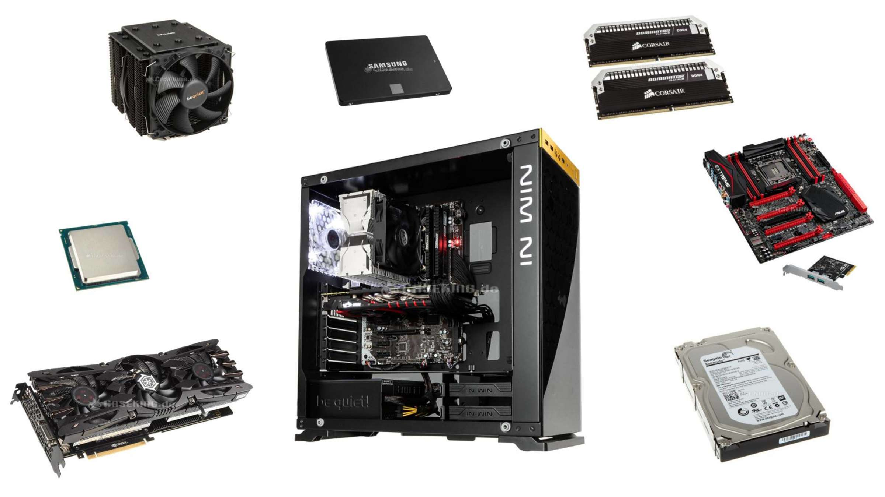

Systeme

Systeme sind in der Informatik unverzichtbar, weil sie Ordnung in komplexe Abläufe bringen.
Sie bestehen aus vielen Teilen, die zusammenarbeiten, um Informationen zu verarbeiten und Ergebnisse zu liefern.
Ohne Systeme könnten Computer, Programme und Netzwerke nicht zuverlässig funktionieren.
Systeme
Systeme spielen bei der Informatik eine zentrale Rolle. Ohne Systeme ist es möglich, dass Computer, Programm und Netze zuverlässig laufen. Man kann sich vorstellen, ein System als ein Ganze aus vielen einzelnen Bestandteilen. Diese Bestandteile arbeiten gemeinsam, damit eine bestimmte Funktion erfüllt werden kann. Diese Bestandteile können Programm, Daten, Geräte oder sogar Regeln sein, nach denen etwas läuft.
Eine der wichtigsten Merkmale von Systemen ist, dass sie einem deduktiven Prozess gehorchen: Eingabe – Verarbeitung – Ausgabe. Zuerst nimmt ein System. Dann verarbeitet es diese anhand fixer Regeln oder Algorithmen (Verarbeitung). Abschließend gibt es ein Ergebnis zurück (Ausgabe). Man findet dieses Schema überall in der Informatik, egal ob bei kleinen oder großen Systemen. Ein leichtes Beispiel: Wenn du eine Taste auf die Tastatur legst, ist das der Eingabe. Der Computer verarbeitet das Signal innerhalb, und auf dem Bildschirm erscheint ein Buchstabe das ist die Ausgabe.
Systeme gibt es in sehr verschiedenen Größen und Formen. Es gibt einige, die sehr klein und überschaubar sind, wie beispielsweise ein einzelnes Programm, das ein bestimmtes Ziel erfüllt. Manche Systeme sind riesig und sehr komplex, wie beispielsweise das Internet, welches Milliarden von Geräten und Diensten miteinander verbindet. Zwischen ihnen liegen mittlere Ebenen, wie beispielsweise Betriebssysteme wie Windows oder Linux, die Programme kontrollieren, Speicher managen und die Verbindung zwischen Hardware und Software stellen.
Damit ein System in der Informatik von Nutzen ist, muss es gewisse Eigenschaften aufweisen. Es muss zuverlässig. arbeiten, also fehlerfrei arbeiten. Es muss sicher sein, so dass keine unerlaubten Zugriffe oder Datenverluste entstehen. Zudem soll es **effizient** sein, also Aufgaben möglichst schnell und mit wenig Aufwand ausführen. Zum Schluss ist es notwendig, dass Systeme anpassbar und erweiterbar sind, so dass sie mit neuen Anforderungen und Technologien wachsen können.
Ein weiteres wichtiges Konzept ist die Verbindung von Teilsystemen. Oft besteht ein großes System aus vielen kleineren Einheiten, die miteinander kommunizieren. Man spricht dann von Subsystemen. Zum Beispiel besteht ein Computersystem aus der Hardware (Prozessor, Speicher, Festplatte), der Software (Betriebssystem, Programme) und den Daten. Diese Teile greifen ineinander, damit das Gesamtsystem richtig funktioniert.
Fazit
Systeme erlauben es, Ordnung in so viele Abläufe zu bringen. Ob in kleinen Programmen oder im globalen Netz Systeme erlauben es, dass Informationen eingelesen werden, verarbeitet werden und entsprechend genutzt werden können.
Was braucht ein PC

Ein PC besteht aus vielen Bauteilen, die jeweils eine eigene Aufgabe haben. Erst wenn alle Komponenten zusammenarbeiten, kann der Computer genutzt werden. Zu den wichtigsten gehören Prozessor, Arbeitsspeicher, Mainboard, Festplatte, Grafikkarte, Netzteil, Gehäuse und Peripheriegeräte.
PC-Komponente
Ein Personal Computer (PC) besteht aus verschiedenen Komponenten, die zusammenarbeiten, damit überhaupt das Gerät funktioniert. Jeder Komponente kommt dabei eine besondere Aufgabe zu und erst im Zusammenspiel ergeben sie ein Gesamtsystem.
Die Zentraleinheit des PCs ist der Prozessor (CPU). Er wird manchmal als „Gehirn“ des Computers bezeichnet, da er Befehle ausführt und Berechnungen durchführt. Ohne CPU kann kein Programm ausgeführt werden. Er wird vom Arbeitsspeicher (RAM) unterstützt. Der RAM speichert Informationen, mit denen der Prozessor aktiv arbeitet. Je mehr RAM ein PC hat, desto schneller und reibungsloser kann er mehrere Aufgaben gleichzeitig ausführen.
Eine weitere wichtige Komponente ist das Mainboard. Es verbindet alle Komponenten miteinander. Prozessor, Arbeitsspeicher, Grafikkarte und Laufwerke sind hier installiert und kommunizieren über das Mainboard. Es ist das „Nervensystem“ des Computers.
Für die dauerhafte Speicherung von Daten gibt es Festplatten. Früher waren das meist HDDs, die Daten auf magnetischen Scheiben speichern. Heute werden häufiger SSDs verwendet, die viel schneller sind, weil sie ohne bewegliche Teile auskommen. Auf Festplatten liegen Betriebssystem, Programme, Fotos, Videos und alle anderen Dateien.
Die Grafikkarte (GPU) spielt eine besondere Rolle. Sie rendert Bilder, Videos und Spiele. Einfache PCs können die CPU zur Berechnung der Grafiken nutzen, leistungsstarke Computer verfügen jedoch über eine zusätzliche Grafikkarte. Insbesondere für Spiele und die Bildbearbeitung ist sie unverzichtbar.
Damit alle Teile mit Strom versorgt werden, braucht ein PC ein Netzteil. Es wandelt den Strom aus der Steckdose so um, dass die Komponenten ihn nutzen können. Außerdem sorgt es dafür, dass die Spannung stabil bleibt, damit es nicht zu Schäden kommt.
Nicht zu vergessen ist das Gehäuse, das alle Bauteile zusammenhält und schützt. Es gibt Platz für Lüfter, die die Wärme nach außen transportieren, denn Computerteile können sich stark erhitzen. Eine gute Kühlung ist wichtig, damit der PC zuverlässig arbeitet.
Darüber hinaus gibt es Peripheriegeräte, d. h. Komponenten, die extern angeschlossen werden. Dazu gehören Monitor, Tastatur, Maus, Lautsprecher oder Drucker. Sie sind nicht direkt im PC installiert, aber für den Betrieb des Computers oder die Darstellung der Ergebnisse erforderlich.
Fazit
Ein PC besteht aus vielen einzelnen Komponenten wie CPU, RAM und Mainboard. Erst das Zusammenspiel aller dieser Teile macht den Computer arbeitsfähig.